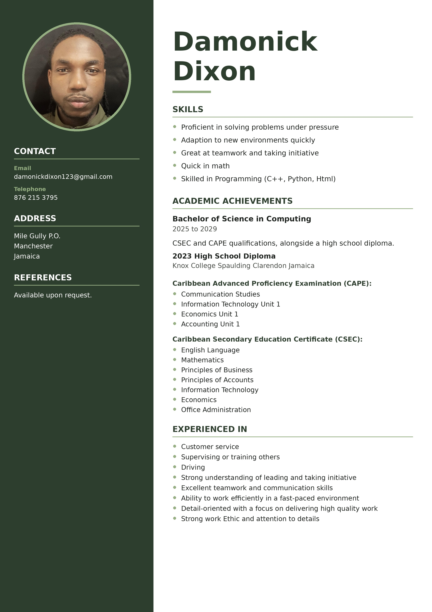

I wish to be apart of the innovative youth and build a future where technology enhances human potential to its best..
My goal in the future is to create easily manuvered, scalable, safe, and moral software solutions that makes life easier in the development of several areas like software engineering,
human computer interaction, data science, and artificial intelligence by closing the gap between present problems and potential futures.
A goal of mine is to aid in developing significant solutions that provide accessibility, sustainability and clarity throughout the use of continuous learning and training .
My mission is to be the best version of myself in all areas of my life.
I am a consistent individual who aspires to be successfull in life taking care of my family, myself, and the generations to come by working in a field that i'm great and enjoy.
I approach life on a daily basis taking on small tasks one a at a time bringing me closer to the longterm goals i set out to accomplish.
This method has been very beneficial for me aiding me to accomplish what I started.